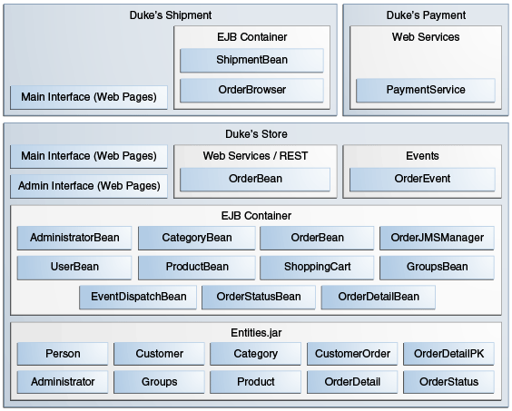
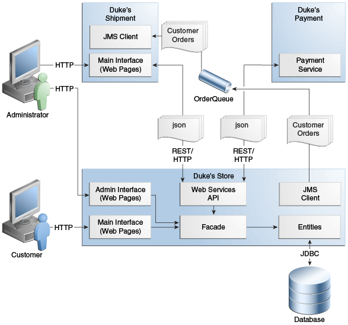
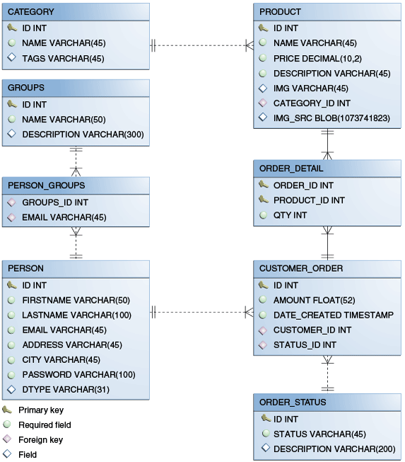

El Bosque de Duke es una aplicación compleja que consta de tres proyectos principales y tres
subproyectos. La Figura 62-1 muestra la arquitectura de los tres proyectos
principales que implementará: La Tienda de Duke, Los Envíos de Duke y Los Pagos de Duke. También
muestra cómo La Tienda de Duke hace uso de los proyectos de Eventos y Entidades.
Figura 62-1 Arquitectura de Ejemplo de Aplicación El Bosque de Duke

El Bosque de Duke utiliza las siguientes características de la plataforma Java EE:
-
Entidades de persistencia IPA de Java
-
Servicios web
-
Un servicio web JAX-RS para pago, con restricciones de seguridad
-
Un servicio web JAX-RS basado en EJB
-
Enterprise beans
-
Inyección de Contextos y Dependencias (CDI)
-
Anotaciones CDI para componentes JavaServer Faces
-
Un bean administrado por CDI que se usa como carrito de compras, con alcance de
conversación
-
Clasificatorios
-
Eventos y controladores de eventos
-
Servlets
-
Tecnología JavaServer Faces, usando Facelets para el front-end web
-
Seguridad
-
Restricciones de seguridad de Java EE en los métodos comerciales de la interfaz
administrativa (enterprise beans)
-
Restricciones de seguridad para clientes y administradores (componentes web)
-
Inicio de Sesión Unico (SSO, en inglés) para propagar una identidad de usuario
autenticada desde La Tienda de Duke a Envíos de Duke
La aplicación El Bosque de Duke tiene dos interfaces de usuario principales, ambas empaquetadas
dentro del archivo WAR de La Tienda de Duke:
-
La interfaz principal, para clientes e invitados
-
La interfaz administrativa utilizada para realizar operaciones administrativas, como agregar
nuevos artículos al catálogo.
La aplicación Envíos de Duke también tiene una interfaz de usuario a la que pueden acceder los
administradores.
La Figura 62-2 muestra cómo interactúan las aplicaciones web y el servicio
web.
Figura 62-2 Interacciones Entre los Componentes de El Bosque de Duke

Como se ilustra en la Figura 62-2, el cliente interactúa con la interfaz
principal de La Tienda de Duke, mientras que el administrador interactúa con la interfaz de
administración. Ambas interfaces acceden a una fachada que consta de beans administrados y beans
de sesión sin estado, que a su vez interactúan con las entidades que representan las tablas de la
base de datos. La fachada también interactúa con las IPA de servicios web que acceden al servicio
web Pagos de Duke. Cuando se aprueba el pago de un pedido, La Tienda de Duke envía el pedido a una
cola JMS. El administrador también interactúa con la interfaz de Envíos de Duke, a la que se puede
acceder directamente a través de Envíos de Duke o desde la interfaz de administración de La Tienda
de Duke mediante un servicio web. Cuando el administrador aprueba el envío de un pedido, Envíos de
Duke consume el pedido de la cola JMS.
Los bloques de construcción más fundamentales de la aplicación son los proyectos de eventos y
entidades, que se incluyen en La Tienda de Duke y Envíos de Duke junto con el proyecto Recursos de
Duke.
El Proyecto eventos
Los eventos son uno de los componentes centrales de El Bosque de Duke. El proyecto
events, incluido en los tres proyectos principales, es el proyecto más simple de la
aplicación. Tiene solo una clase, OrderEvent, pero esta clase es responsable de la
mayoría de los mensajes entre objetos en la aplicación.
La aplicación puede enviar mensajes basados en eventos a diferentes componentes y reaccionar a
ellos en función de la calificación del evento. La aplicación admite los siguientes
calificadores:
-
@LoggedIn: para usuarios autenticados
-
@New: cuando el carrito de compras crea un nuevo pedido
-
@Paid: cuando un pedido está pagado y listo para su envío
El siguiente fragmento de código de la clase PaymentHandler de La Tienda de Duke
muestra cómo se maneja el evento @Paid:
@Inject @Paid Event<OrderEvent> eventManager;
...
public void onNewOrder(@Observes @New OrderEvent event) {
if (processPayment(event)) {
orderBean.setOrderStatus(event.getOrderID(),
String.valueOf(OrderBean.Status.PENDING_PAYMENT.getStatus()));
logger.info("Payment Approved");
eventManager.fire(event);
} else {
orderBean.setOrderStatus(event.getOrderID(),
String.valueOf(OrderBean.Status.CANCELLED_PAYMENT.getStatus()));
logger.info("Payment Denied");
}
}
Para permitir a los usuarios agregar fácilmente más eventos al proyecto o actualizar una clase
de evento con más campos para un nuevo cliente, este componente es un proyecto separado dentro
de la aplicación.
El Proyecto entidades
El proyecto entities es un proyecto de la IPA de Persistencia de Java (JPA)
utilizado tanto por La Tienda de Duke como por Envíos de Duke. Se genera a partir del esquema de
la base de datos que se muestra en la Figura 62-3 y también se utiliza como
base para las entidades consumidas y producidas por los servicios web a través de JAXB. Cada
entidad tiene reglas de validación basadas en requerimientos de negocio, especificadas mediante
Validación de Beans.
Figura 62-3 Tablas de la Base de Datos de El Bosque de Duke y sus Relaciones

El esquema de la base de datos contiene ocho tablas:
-
PERSON, que tiene una relación de uno a muchos con PERSON_GROUPS y
CUSTOMER_ORDER
-
GROUPS, que tiene una relación de uno a muchos con PERSON_GROUPS
-
PERSON_GROUPS, que tiene una relación de muchos a uno con PERSON y
GROUPS (es la tabla de unión entre esas dos tablas)
-
PRODUCT, que tiene una relación de muchos a uno con CATEGORY y una
relación de uno a muchos con ORDER_DETAIL
-
CATEGORY, que tiene una relación de uno a muchos con PRODUCT
-
CUSTOMER_ORDER, que tiene una relación de uno a muchos con
ORDER_DETAIL y una relación de muchos a uno con PERSON y
ORDER_STATUS
-
ORDER_DETAIL, que tiene una relación de muchos a uno con PRODUCT y
CUSTOMER_ORDER (es la tabla de unión entre esas dos tablas)
-
ORDER_STATUS, que tiene una relación de uno a muchos con
CUSTOMER_ORDER
Las clases de entidad que corresponden a estas tablas son las siguientes.
-
Person, que define atributos comunes a clientes y administradores. Estos
atributos son el nombre de la persona y la información de contacto, incluidas la calle y las
direcciones de correo electrónico. La dirección de correo electrónico tiene una anotación de
Validación de Beans para garantizar que los datos enviados estén bien formados. La tabla
generada para la entidad Person también tiene un campo DTYPE que
representa la columna discriminadora. Su valor identifica la subclase
(Customer o Administrator) a la que pertenece la persona.
-
Customer, una especialización de Person con un campo específico
para objetos CustomerOrder.
-
Administrator, una especialización de Person con campos para
privilegios de administración.
-
Groups, que representa el grupo (USERS o ADMINS) al
que pertenece el usuario.
-
Product, que define los atributos de los productos. Estos atributos incluyen
nombre, precio, descripción, imagen asociada y categoría.
-
Category, que define atributos para categorías de productos. Estos atributos
incluyen un nombre y un conjunto de etiquetas.
-
CustomerOrder, que define los atributos de los pedidos realizados por los
clientes. Estos atributos incluyen una cantidad y una fecha, junto con los valores de
identificación del cliente y el detalle del pedido.
-
OrderDetail, que define atributos para el detalle del pedido. Estos atributos
incluyen una cantidad y valores de identificación para el producto y el cliente.
-
OrderStatus, que define un atributo de estado para cada pedido.
El Proyecto pagos-de-duke
El proyecto dukes-payment es un proyecto web que contiene un servicio web de pago
simple. Dado que esta es una aplicación de ejemplo, no obtiene ninguna información de crédito
real ni siquiera el estado del cliente para validar el pago. Por ahora, la única regla que
impone el sistema de pago es denegar todos los pedidos superiores a $1,000. Esta aplicación
ilustra un escenario común en el que se utiliza un servicio de pago de terceros para validar
tarjetas de crédito o pagos bancarios.
El proyecto utiliza autenticación básica HTTP y JAAS (Servicio de Autenticación y Autorización
de Java) para autenticar a un cliente en un servicio web JAX-RS. La implementación en sí expone
un método simple, processPayment, que recibe un OrderEvent para
evaluar y aprobar o denegar el pago del pedido. El método se llama desde el proceso de pago de
La Tienda de Duke.
El Proyecto recursos-de-duke
El proyecto dukes-resources contiene una serie de archivos utilizados tanto por La
Tienda de Duke como por Envíos de Duke, agrupados en un archivo JAR ubicado en el classpath. Los
recursos están en el directorio src/main/resources:
-
META-INF/resources/css: dos hojas de estilo, default.css y
jsfcrud.css
META-INF/resources/img: Imágenes utilizadas por los proyectos
META-INF/resources/js: un archivo JavaScript, util.js
-
META-INF/resources/util: Componentes compuestos utilizados por los proyectos
bundles/Bundle.properties: Mensajes de la aplicación en inglés
bundles/Bundle_es.properties: Mensajes de la aplicación en español
-
ValidationMessages.properties: Mensajes de Validación de Beans en Inglés
-
ValidationMessages_es.properties: Mensajes de Validación de Beans en Español
El Proyecto de la Tienda de Duke
La Tienda de Duke, una aplicación web, es la aplicación principal de El Bosque de Duke. Es
responsable de la interfaz de la tienda principal para los clientes, así como de la interfaz de
administración.
La interfaz principal de La Tienda de Duke permite al usuario realizar las siguientes tareas:
Navegar por el catálogo de productos
Registrarse como nuevo cliente
Añadir productos al carrito de la compra
Pagar la cuenta e irse
Ver el estado del pedido
La interfaz de administración de La Tienda de Duke permite a los administradores realizar las
siguientes tareas:
Mantenimiento del producto (crear, editar, actualizar, eliminar)
Mantenimiento de categorías (crear, editar, actualizar, eliminar)
Mantenimiento de clientes (crear, editar, actualizar, eliminar)
Mantenimiento de grupos (crear, editar, actualizar, eliminar)
El proyecto también utiliza beans de sesión sin estado como fachadas para las interacciones con
las entidades JPA descritas en El Proyecto entidades, y beans
administrados por CDI como controladores para las interacciones con las páginas de Facelets. El
proyecto sigue así el patrón MVC (Modelo-Vista-Controlador) y aplica el mismo patrón a todas las
entidades y páginas, como en el siguiente ejemplo.
-
AbstractFacade es una clase abstracta que recibe un Type<T>
e implementa las operaciones comunes (CRUD) para este tipo, donde
<T> es una entidad JPA.
-
ProductBean es un bean de sesión sin estado que extiende
AbstractFacade, aplicando Product como Type<T>,
e inyecta el PersistenceContext para el EntityManager. Este bean
implementa cualquier método personalizado necesario para interactuar con la entidad
Product o para llamar a una consulta personalizada.
-
ProductController es un bean administrado por CDI que interactúa con los
enterprise beans y las páginas Facelets necesarios para controlar la forma en que se
mostrarán los datos.
ProductBean comienza de la siguiente manera:
@Stateless
public class ProductBean extends AbstractFacade<Product> {
private static final Logger logger =
Logger.getLogger(ProductBean.class.getCanonicalName());
@PersistenceContext(unitName="forestPU")
private EntityManager em;
@Override
protected EntityManager getEntityManager() {
return em;
}
...
Enterprise Beans Usados en la Tienda de Duke
Los enterprise beans utilizados en La Tienda de Duke proporcionan la lógica de negocio para la
aplicación y se encuentran en el paquete com.forest.ejb. Todos son beans de
sesión sin estado.
AbstractFacade no es un enterprise bean sino una clase abstracta que implementa
operaciones comunes para Type<T>, donde <T> es una
entidad JPA.
La mayoría de los otros beans extienden AbstractFacade, inyectan
PersistenceContext e implementan los métodos personalizados necesarios:
AdministratorBean
CategoryBean
EventDispatcherBean
GroupsBean
OrderBean
OrderDetailBean
OrderJMSManager
OrderStatusBean
ProductBean
ShoppingCart
UserBean
La clase ShoppingCart, aunque está en el paquete ejb, es un bean
administrado por CDI con ámbito de conversación, lo que significa que la información de la
solicitud persistirá en varias solicitudes. Además, ShoppingCart es responsable
de iniciar la cadena de eventos para los pedidos de los clientes, que invoca el servicio web
RESTful en dukes-payment y publica un pedido en la cola JMS para la aprobación
del envío si el pago es exitoso.
Archivos Facelets Usados en la Interfaz Principal de la Tienda de Duke
Al igual que los otros ejemplos de estudios de casos, La Tienda de Duke usa Facelets para
mostrar la interfaz de usuario. La interfaz principal utiliza una gran cantidad de páginas
Facelets para mostrar diferentes áreas. Las páginas se agrupan en directorios según el módulo
que manejan.
-
template.xhtml: archivo de plantilla, utilizado para las interfaces principal
y de administración. Primero realiza una revisión del navegador para verificar que el
navegador del usuario soporte HTML 5, el cual es requerido para El Bosque de Duke. Divide
la pantalla en varias áreas y especifica la página del cliente para cada área.
-
topbar.xhtml: Página para el área de inicio de sesión en la parte superior de
la pantalla.
top.xhtml: Página para el área de título.
left.xhtml: Página de la barra lateral izquierda.
index.xhtml: Página para el contenido de la pantalla principal.
-
login.xhtml: página de inicio de sesión especificada en web.xml.
La interfaz de inicio de sesión principal se proporciona en topbar.xhtml,
pero esta página aparece si hay un error de inicio de sesión.
-
Directorio admin: Páginas relacionadas con la interfaz de administración,
descritas en
Archivos Facelets Utilizados en la Interfaz de Administración de la Tienda de Duke
.
-
Directorio cliente: Páginas relacionadas con los clientes
(Create.xhtml, Edit.xhtml, List.xhtml,
Perfil.xhtml, View.xhtml).
-
Directorio order: páginas relacionadas con pedidos
(Create.xhtml, List.xhtml, MyOrders.xhtml,
Ver.xhtml).
-
Directorio orderDetail: página emergente que permite a los usuarios ver los
detalles de un pedido (View_popup.xhtml).
-
Directorio product: Páginas relacionadas con productos
(List.xhtml, ListCategory.xhtml, View.xhtml).
Archivos Facelets Utilizados en la Interfaz de Administración de la Tienda de Duke
Las páginas de Facelets para la interfaz de administración de La Tienda de Duke se encuentran
en el directorio web/admin:
-
Directorio administrator: Páginas relacionadas con la gestión del
administrador (Create.xhtml, Edit.xhtml, List.xhtml,
View.xhtml)
-
Directorio category: páginas relacionadas con la gestión de categorías de
productos (Create.xhtml, Edit.xhtml, List.xhtml,
View.xhtml)
-
Directorio cliente: Páginas relacionadas con la gestión de clientes
(Create.xhtml, Edit.xhtml, List.xhtml,
Profile.xhtml, View.xhtml)
-
Directorio groups: páginas relacionadas con la gestión de grupos
(Create.xhtml, Edit.xhtml, List.xhtml,
View.xhtml)
-
Directorio order: páginas relacionadas con la gestión de pedidos
(Create.xhtml, Edit.xhtml, List.xhtml,
View.xhtml)
-
Directorio orderDetail: página emergente que permite al administrador ver los
detalles de un pedido (View_popup.xhtml)
-
Directorio producto: Páginas relacionadas con la gestión de productos
(Confirm.xhtml, Create.xhtml, Edit.xhtml,
List.xhtml, View.xhtml)
Beans Gestionados Usados en la Tienda de Duke
La Tienda de Duke utiliza los siguientes beans gestionados por CDI, que corresponden a los
enterprise beans. Los beans están en el paquete com.forest.web:
AdministratorController
CategoryController
CustomerController
CustomerOrderController
GroupsController
OrderDetailController
OrderStatusController
ProductController
UserController
Clases Auxiliares Usadas en la Tienda de Duke
Los beans administrados por CDI en la interfaz principal de La Tienda de Duke utilizan las
siguientes clases auxiliares, que se encuentran en el paquete
com.forest.web.util:
-
AbstractPaginationHelper: una clase abstracta con métodos utilizados por los
beans administrados
-
ImageServlet: una clase de servlet que recupera el contenido de la imagen de
la base de datos y lo muestra
-
JsfUtil: clase utilizada para las operaciones de JavaServer Faces, como la
cola de mensajes en una instancia de FacesContext
-
MD5Util: Clase utilizada por el bean gestionado
CustomerController para generar una contraseña cifrada para un usuario
Calificadores Utilizados en la Tienda de Duke
La Tienda de Duke define los siguientes calificadores en el paquete
com.forest.qualifiers:
@LoggedIn: califica a un usuario como que ha iniciado sesión
@New: califica un pedido como nuevo
@Paid: califica un pedido como pagado
Controladores de Eventos Utilizados en la Tienda de Duke
La Tienda de Duke define manejadores de eventos relacionados con la clase
OrderEvent empaquetada en el proyecto events (ver
El Proyecto eventos). Los controladores de eventos se encuentran en el
paquete com.forest.handlers.
-
IOrderHandler: la interfaz IOrderHandler define un método,
onNewOrder, implementado por las dos clases de controlador.
-
PaymentHandler: el bean ShoppingCart activa un
OrderEvent calificado como @New. El método
onNewOrder de PaymentHandler observa estos eventos y, cuando los
intercepta, procesa el pago mediante el servicio web Pagos de Duke. Después de una
respuesta exitosa del servicio web, PaymentHandler activa el
OrderEvent nuevamente, esta vez calificado como @Paid.
-
DeliveryHandler: El método onNewOrder de
DeliveryHandler observa objetos OrderEvent calificados como
@Paid (pedidos pagados y listos para entrega) y modifica el estado del pedido
a PENDING_SHIPMENT. Cuando un administrador accede a Envíos de Duke, llamará
al Servicio de pedidos, un servicio web RESTful, y solicitará todos los pedidos de la base
de datos que estén listos para la entrega.
Descriptores de Implementación Utilizados en la Tienda de Duke
La Tienda de Duke utiliza los siguientes descriptores de implementación, ubicados en el
directorio web/WEB-INF:
faces-config.xml: El archivo de configuración de JavaServer Faces
-
glassfish-web.xml: el archivo de configuración específico del servidor
GlassFish
web.xml: El archivo de configuración de la aplicación web
El Proyecto de Envío de Duke
Envíos de Duke es una aplicación web con una página de inicio de sesión, una página principal de
Facelets y algunos otros objetos. Esta aplicación, a la que solo pueden acceder los
administradores, consume pedidos de una cola JMS y llama al servicio web RESTful expuesto por La
Tienda de Duke para actualizar el estado del pedido. La página principal de Envíos de Duke
muestra una lista de pedidos pendientes de aprobación de envío y una lista de pedidos enviados.
El administrador puede aprobar o denegar pedidos para su envío. Si se aprueba, el pedido se
envía y aparece bajo el encabezado Enviado. Si es denegado, el pedido desaparece de la página,
y en la lista de Pedidos del cliente aparece como cancelado.
También hay un icono de engranaje en la lista Pendiente que realiza una llamada Ajax al Servicio
de pedidos para actualizar la lista sin actualizar la página. El código se ve así:
<h:commandLink>
<h:graphicImage library="img" title="Check for new orders"
style="border:0px" name="refresh.png"/>
<f:ajax execute="@form" render="@form" />
</h:commandLink>
Enterprise Beans Usados en el Envío de Duke
El bean de sesión sin estado UserBean utilizado en Envíos de Duke proporciona la
lógica de negocio para la aplicación y se encuentra en el paquete
com.forest.shipment.session.
Al igual que La Tienda de Duke, Envíos de Duke usa la clase AbstractFacade. Esta
clase no es un enterprise bean sino una clase abstracta que implementa operaciones comunes
para Type<T>, donde <T> es una entidad JPA.
El bean de sesión sin estado OrderBrowser, ubicado en el paquete
com.forest.shipment.ejb, tiene un método que examina la cola de pedidos JMS y
otro que consume un mensaje de pedido después del administrador aprueba o deniega la orden de
envío.
Archivos Facelets Usados en el Envío de Duke
Envíos de Duke tiene solo una página, por lo que tiene muchos menos archivos Facelets que La
Tienda de Duke.
-
template.xhtml: El archivo de plantilla, como el de La Tienda de Duke,
primero realiza una revisión del navegador para verificar que el navegador del usuario
soporte HTML 5, el cual es requerido para El Bosque de Duke. Divide la pantalla en áreas y
especifica la página del cliente para cada área.
-
topbar.xhtml: Página para el área de inicio de sesión en la parte superior de
la pantalla.
top.xhtml: Página para el área de título.
-
index.xhtml: Página para el contenido inicial de la pantalla principal.
-
login.xhtml: página de inicio de sesión especificada en web.xml.
La interfaz de inicio de sesión principal se proporciona en topbar.xhtml,
pero esta página aparece si hay un error de inicio de sesión.
-
admin/index.xhtml: Página para el contenido de la pantalla principal después
de la autenticación.
Beans Gestionados Usados en el Envío de Duke
Envíos de Duke utiliza los siguientes beans administrados por CDI, en el paquete
com.forest.shipment:
Clases Auxiliares Usadas en el Envío de Duke
Los beans administrados de Envíos de Duke usan solo una clase auxiliar, que se encuentra en el
paquete com.forest.shipment.web.util:
Calificador Utilizado en el Envío de Duke
Descriptores de Despliegue Utilizados en el Envío de Duke
Envíos de Duke utiliza los siguientes descriptores de despliegue:
faces-config.xml: El archivo de configuración de JavaServer Faces
-
glassfish-web.xml: el archivo de configuración específico del servidor
GlassFish
web.xml: El archivo de configuración de la aplicación web